Overview
SugarCRM is a web-based customer relations management (CRM) tool that facilitates the use of customer support, marketing and sales business roles by bringing them together under a unified software system. This allows customer relations specialists to quickly and efficiently deal with a wide range of customer demands.
Although SugarCRM can be accessed through a website, its functionalities has been integrated with ProcessMaker, meaning users can manage SugarCRM modules from within ProcessMaker through a web service connection.
The communication between ProcessMaker and SugarCRM application can be successfully created using the 11 triggers added within ProcessMaker; amongst those we can find:
- Create Sugar Accounts, contacts, leads and opportunities.
- To get Sugar accounts, calls, contacts, entries, leads an opportunities.
Each one of them will be explained in detail in the guide below.
How it works
In the image below, you can see the option to create SugarCRM triggers from ProcessMaker (ie. Create an Account) which will affect directly in the SugarCRM Environment.
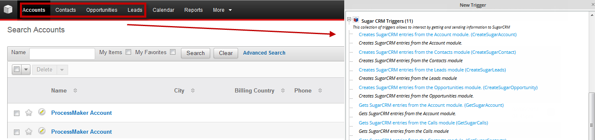
But, what do we need in order to create SugarCRM triggers in ProcessMaker?.. As we mentioned before the communication can be achieved using SugarCRM web services, so make sure you have a valid web service URL. A valid URL will have the following structure:
http://sugarCRM_URL/soap.php?wsdl
Depending on the Sugar installation some will have the web service inside a folder:
http://sugarCRM_URL/sugarcrm/soap.php?wsdl
Just to make sure, copy the link in a web browser and you must have the XML definition for the web service:
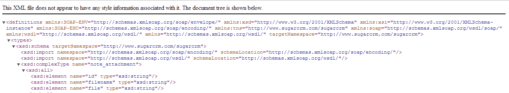
Requirements
- ProcessMaker v. 2.0.30 and later
- SugarCRM V. 6.5.x and later
Glosssary
Source: http://forums.sugarcrm.com
Account
A record representing a customer or a business. An account contains information such as the customer’s name, address, and phone number.
Contact
A person who may be associated with a possible sales opportunity or with an account.
Lead
An early contact in the sales process who has not yet been evaluated or qualified to be a contact.
Opportunity
A specific selling opportunity or sales deal that you have identified and qualified. Opportunities progress through sales stages such as Qualification, Negotiation, and Closed Won, and have an amount and an expected close date associated with them for purposes of forecasting the amount of sales that will close during a time period.
SugarCRM Triggers
CreateSugarAccount()
CreateSugarAccount(): Create an account record in the SugarCRM interface.
Function Definition
Parameter List
- sugarSoap: Sugar SOAP URL. eg.
http://www.example.com/sugar/soap.php?wsdl
- user: Username who is used to login in SugarCRM.
- password: Password which corresponds to the username given in a previous field.
- name: Give the account a name to have it created in SugarCRM.
- resultType: The result could be either an array with the list of all account elements, or an object.
Return value
It returns the Sugar Account ID.
Example
Let's create an account from the information filled in the Dynaform. In this case, it is recommended to create first the dynaform based on the parameters of the trigger, since those variables will be used in the trigger.
Dynaform looks like:
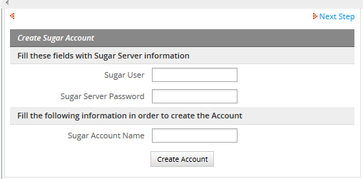
Depending on your process design, and the permission your users have over your Sugar server information, you can create Dynaform fields, Sugar User and Sugar Server Password as the image shown, to let your users filled those fields with your Sugar Server information. If you don't want to give that information to your users, you can fill the information of both fields inside your trigger.
Then, create the trigger, go to TRIGGERS tab, then choose SugarCRM triggers and click over CreateSugarAccount trigger and you will see the following trigger definition:
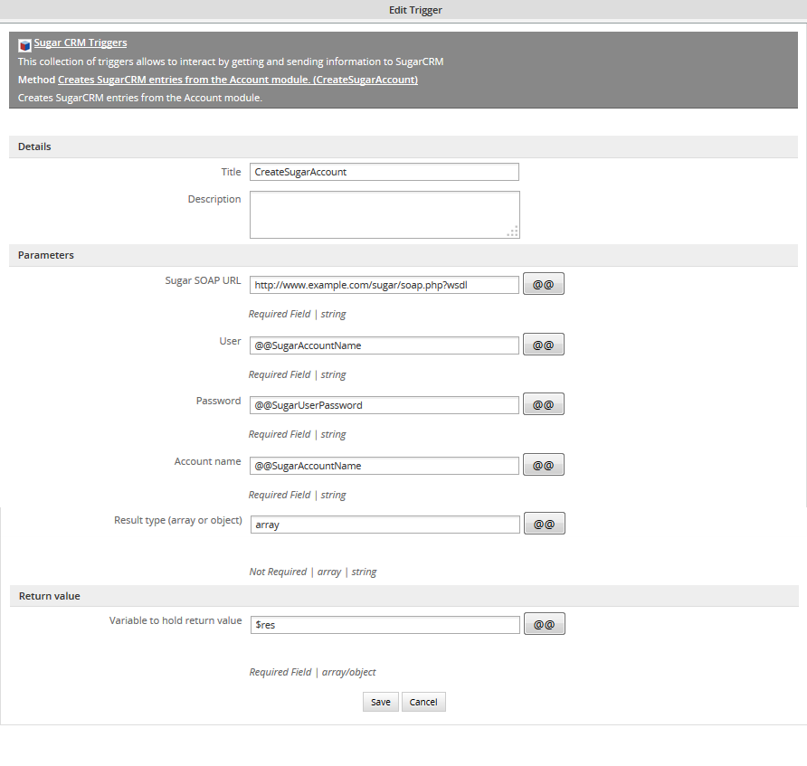
If you take a look at the source code (remember if you edit the trigger source code then you won't be able to come back to the trigger definition), you will see the following definition:
Take a look at the array parameter, it is not enclosed in single quotes, so enclose it in single or double quotes, otherwise trigger won't work. At the end we will have:
Then, add the trigger after the Dynaform, execute your process and fill the information in the dynaform:
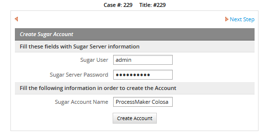
By clicking on Create Account button, the account must be created. To verify this login in SugarCRM and go to Accounts tab, you will see the account created:
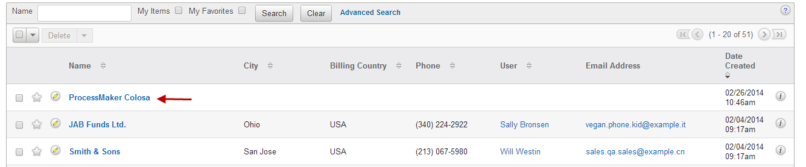
CreateSugarContact()
CreateSugarContact(): Create a SugarCRM contact in your SugarCRM instance.
Function Definition
Parameter List
- sugarSoap: Sugar SOAP URL. eg.
http://www.example.com/sugar/soap.php?wsdl
- user: Username who is used to login in SugarCRM.
- password: Password which correspond to the username given in a previous field.
- first_name: Give the contact a first name.
- last_name: Give the contact a last name.
- email: Add a contact's email.
- title: Add the contact's job title.
- phone: Add the contact's phone number.
- account_id: Add a valid customer number.
- resultType: The result could be either an array with the list of all account elements, or an object.
Return value It returns the created contact.
Example
Let's create a contact from the information filled in the DynaForm. In this case, it is recommended to create first the dynaform based on the parameters of the trigger, since those variables will be used in the trigger.
Dynaform will look likes:
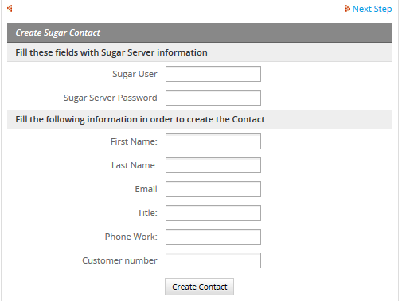
Depending on your process design, and the permission your users have over your Sugar server information, you can create Dynaform fields, Sugar User and Sugar Server Password as the image shown, to let your users filled those fields with your Sugar Server information. If you don't want to give that information to your users, you can fill the information of both fields inside your trigger.
Then, create the trigger using the name of the Dynaform fields. Go to TRIGGERS tab, then choose SugarCRM triggers and click over CreateSugarContact trigger and you will see the following trigger definition:

If you take a look at the source code (remember if you edit the trigger source code then you won't be able to come back to the trigger definition), you will see the following definition:
Take a look at the array parameter, it is not enclosed in single quotes, so enclose it in single or double quotes, otherwise trigger won't work. At the end we will have:
Assign the trigger after the dynaform, and run a case.
Filling the dynaform:
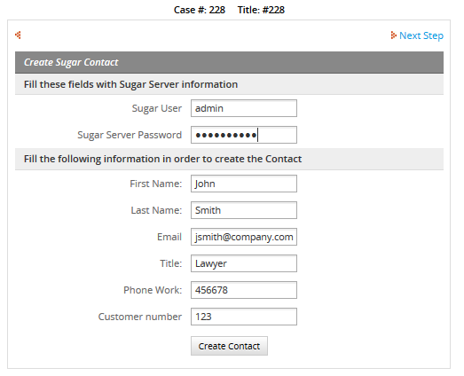
Click on Create Contact button and then, login in your Sugar instance, look the user you've created, in the case of the example John Smith was created successfully:
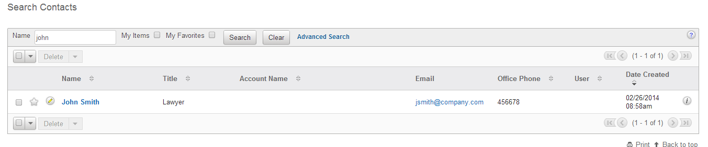
CreateSugarLeads()
CreateSugarLeads(): Create a SugarCRM lead inside a SugarCRM instance.
Function Definition
Parameter List
- sugarSoap: Sugar SOAP URL. eg.
http://www.example.com/sugar/soap.php?wsdl
- user: Username who is used to login in SugarCRM.
- password: Password which correspond to the username given in a previous field.
- first_name: Give the contact a first name.
- last_name: Give the contact a last name.
- email: Add a contact's email.
- title: Add the contact's job title.
- phone: Add the contact's phone number.
- account_id: Add a valid customer number.
- resultType: The result could be an array with the list of all account elements, or an object.
Return value It returns the creation of a sugar lead.
Example
Let's create a lead using the information filled in the Dynaform. As a first step we will create the Dynaform, since we need to use the fields definition in the trigger. The Dynaform will be:
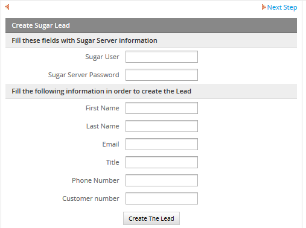
Depending on your process design, and the permission your users have over your Sugar server information, you can create Dynaform fields, Sugar User and Sugar Server Password as the image shown, to let your users filled those fields with your Sugar Server information. If you don't want to give that information to your users, you can fill the information of both fields inside your trigger.
Then, go to TRIGGERS tab, then choose SugarCRM triggers and click over CreateSugarLead trigger and you will see the following trigger definition:
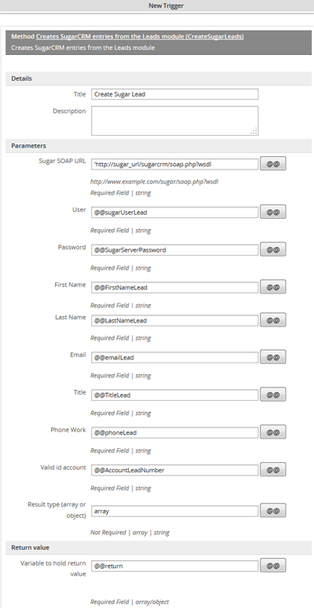
If you take a look at the source code (remember if you edit the trigger source code then you won't be able to come back to the trigger definition), you will see the following definition:
@@SugarTitle,@@SugarPhoneWork,@@sugarCustomerNumber,array);
Take a look at the array parameter, it is not enclosed in single quotes, so enclose it in single or double quotes, otherwise trigger won't work. At the end we will have:
@@SugarTitle,@@SugarPhoneWork,@@sugarCustomerNumber,"array");
Once the trigger has been created, assign it after your Dynaform, and start a case. Fill the Dynaform with the new lead information:
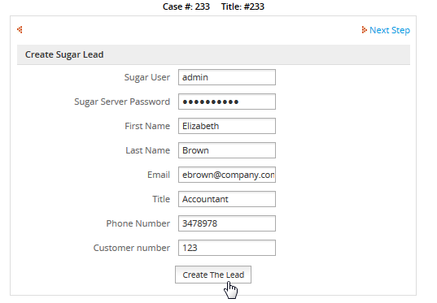
Click on Create Lead button, then the lead will be created inside SugarCRM instance, so login there and go to Leads option, look for the lead created, in the case of the example Elizabeth Brown,
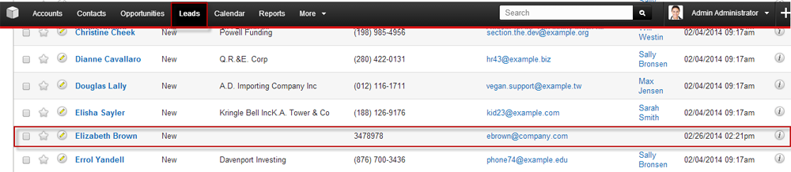
CreateSugarOpportunity()
CreateSugarOpportunity(): Create a SugarCRM Opportunity inside SugarCRM instance.
Function Definition
Parameter List
- sugarSoap: Sugar SOAP URL. eg.
http://www.example.com/sugar/soap.php?wsdl
- user: Username who is used to login in SugarCRM.
- password: Password which correspond to the username given in a previous field.
- name: Opportunity Name.
- account_id: Add a valid customer number.
- amount Introduce the opportunity amount.
- date_closed Define the date when the opportunity was closed.
- sales_stage Choose amongst one of the stages: Prospecting, Qualification, Needs Analysis, Value Proposition, Id. Decision Makers, Perception Analysis, Proposal/Price Quote, Negotiation/Review, Closed Won, Closed Lost.
- resultType The result could be an array with the list of all account elements, or an object.
Return Value It returns the creation of a Sugar Opportunity.
Example
Let's create a lead using the information filled in the DynaForm. As a first step we will create the DynaForm, since we need to use the fields definition in the trigger. The Dynaform will be:
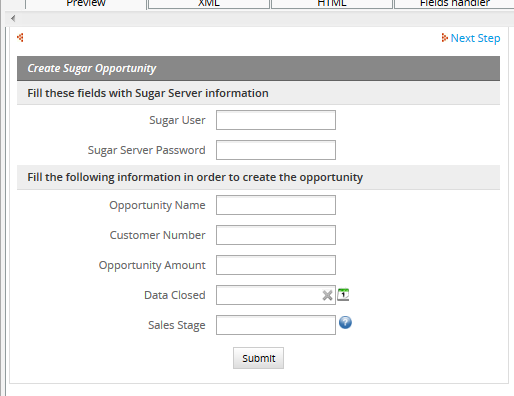
Depending on your process design, and the permission your users have over your Sugar server information, you can create Dynaform fields, Sugar User and Sugar Server Password as the image shown, to let your users filled those fields with your Sugar Server information.
After this, create the trigger, go to TRIGGERS tab, then choose SugarCRM triggers and click over CreateSugarOpportunity trigger and you will see the following trigger definition with their corresponding parameters filled:
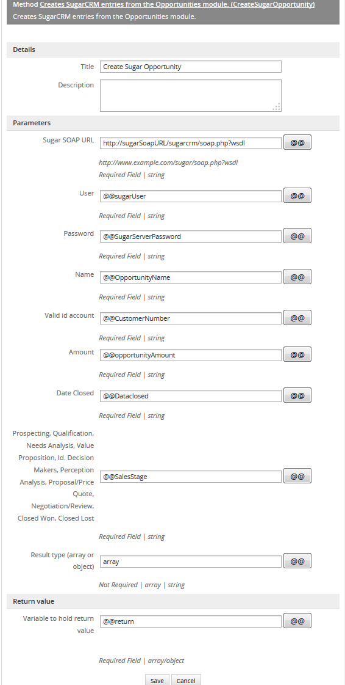
If you take a look at the source code (remember if you edit the trigger source code then you won't be able to come back to the trigger definition), you will see the following definition:
Take a look at the array parameter, it is not enclosed in single quotes, so enclose it in single or double quotes, otherwise the trigger won't work. At the end we will have:
Assign the trigger after your Dynaform and execute a case. In the example below we are creating Enterprise Subscriptions opportunity:
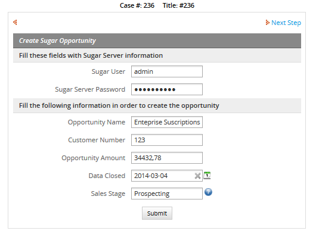
Click on Submit button to create the opportunity, then login to your SugarCRM instance go to Opportunities tab and then you will see the new opportunity created in ProcessMaker:
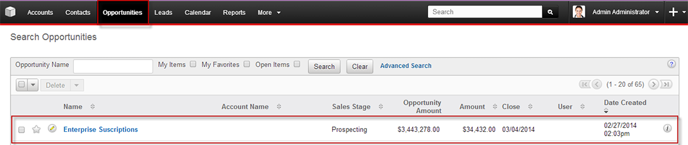